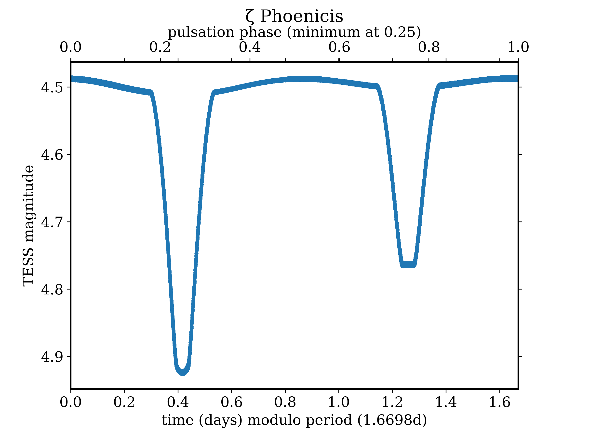
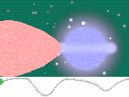

An eclipsing variable star is a binary star system whose orbital plane lies nearly edge-on to the line of sight from Earth, so that the two stars alternately pass in front of one another and periodically dim the total light received by an observer. The brightness changes are purely geometric — neither star is itself intrinsically variable — making eclipsing binaries among the most powerful tools for determining fundamental stellar properties such as mass, radius, and luminosity. The prototype is Algol (β Persei), whose periodic dimming was first correctly explained by John Goodricke in 1782.

Warrickball / Wikimedia Commons (CC BY-SA 4.0)
{kind=link}
How Eclipsing Binaries Work
When the cooler star passes in front of the hotter star as seen from Earth, the system's total brightness falls to its deepest level — the primary minimum. Half an orbit later, when the hotter star moves in front of the cooler star, a shallower dip occurs — the secondary minimum. The depth of each minimum depends on the size, temperature, and surface brightness of each star, and on the orbital inclination. Between minima, the brightness may be constant (for well-separated, near-spherical stars) or continuously varying (for gravitationally distorted, tidally elongated stars).
Types of Eclipsing Binaries
The General Catalogue of Variable Stars classifies eclipsing systems into three main subtypes. EA (Algol-type) systems contain near-spherical, well-separated stars; their light curves show a flat baseline between eclipses and sharply defined ingress and egress. EB (Beta Lyrae-type) systems are semi-detached; tidal distortion stretches each star into an ellipsoidal shape and the light curve varies continuously, with no flat baseline and unequal minima depths. The orbital period of Beta Lyrae itself is 12.9414 days and is increasing by roughly 19 seconds per year owing to ongoing mass transfer through an accretion disc. EW (W Ursae Majoris-type) systems are contact binaries; both stars share a common convective envelope, producing nearly equal minimum depths and a continuously varying light curve. EW periods are typically 0.22–0.8 days.

Stanlekub / Wikimedia Commons (Public Domain)
{kind=link}
Algol and the Algol Paradox
Algol (β Persei) consists of a hot B8V primary (surface temperature approximately 12,000 K) and a cooler K2IV subgiant secondary. Its brightness varies from magnitude 2.1 at maximum to 3.4 at primary minimum over a period of 2.867315 days. The system presents the 'Algol paradox': the subgiant secondary appears more evolved than the main-sequence primary, despite the expectation that both stars formed together. The paradox is resolved by mass transfer — the originally more-massive star lost material to its companion, reversing which star is now the heavier of the two.
Deriving Stellar Masses and Radii
Eclipsing binaries are uniquely powerful because combining eclipse photometry with spectroscopic radial velocity curves yields stellar masses and radii with almost no reliance on theoretical models. From the light curve alone, analysts extract the ratio of stellar radii, each radius in terms of orbital separation, the ratio of surface luminosities, and the orbital inclination. Adding double-lined radial velocity data yields the absolute orbital semi-major axis via Kepler's third law, and from that both individual stellar masses and absolute radii. Precision of approximately 1% in mass and radius is achievable for well-studied detached eclipsing binaries, making them benchmark calibrators for stellar evolution models.
During an eclipse, light from the occulted star is progressively blocked as the foreground star's disc slides across it. Because stars are not uniformly bright — the centre of the disc is hotter and brighter than the edge, an effect known as limb darkening — the ingress and egress portions of the light curve carry a characteristic curvature. Careful modelling of this curvature constrains the stellar atmosphere models used to predict surface temperature distributions. Surveys such as Kepler and TESS have discovered thousands of new eclipsing binaries, enabling statistical studies of binary-star populations and extending the technique geometrically identical to exoplanet transit detection.